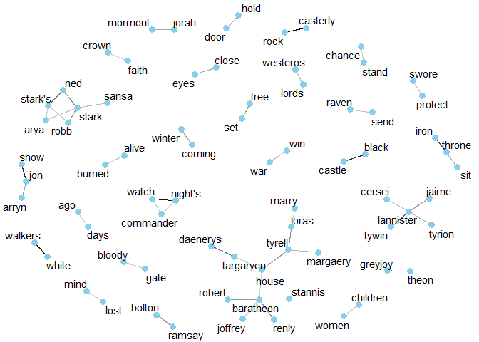
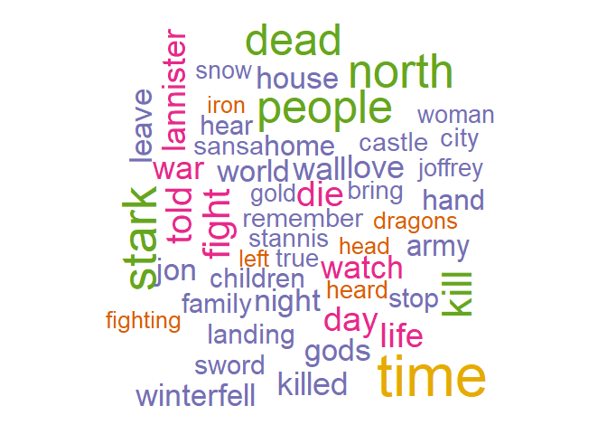
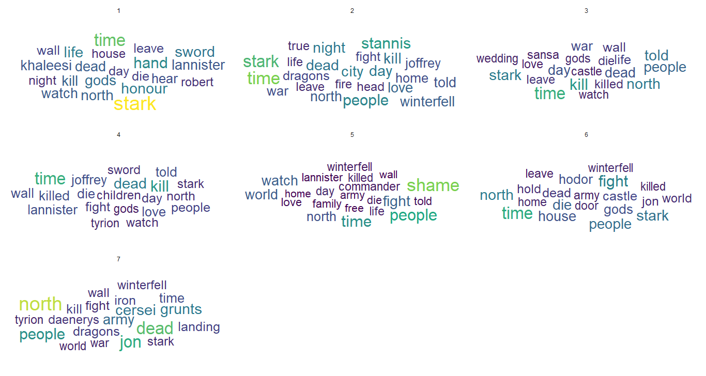
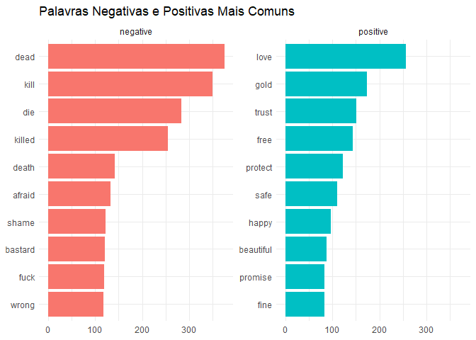
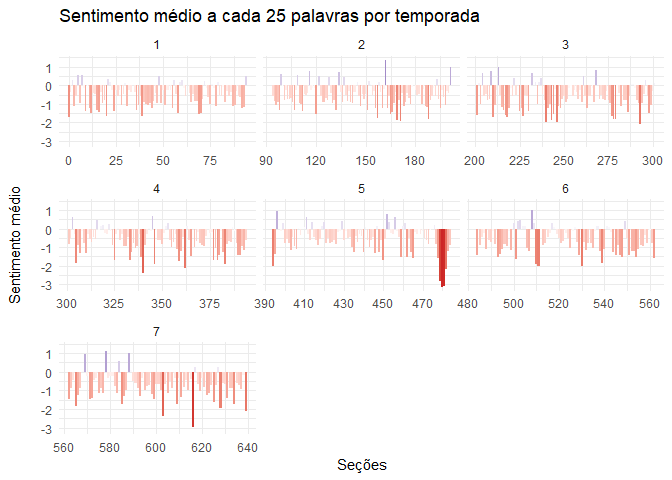
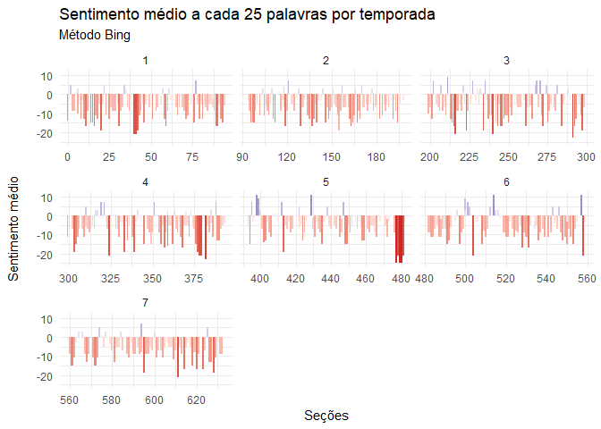
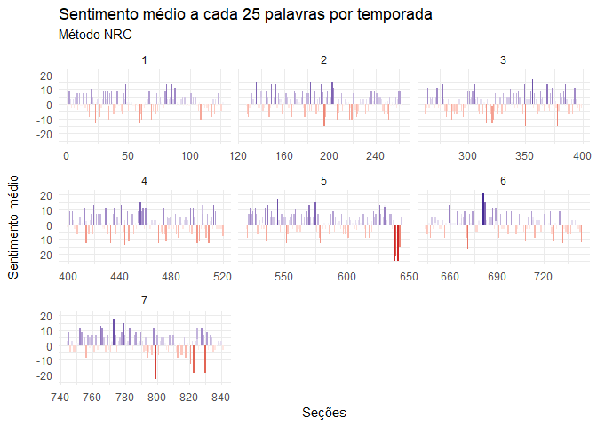

Mineração de Texto com as legendas de Game of Thrones
Neste post procuro visualizar dados textuais das legendads de Game of Thrones
com o R, utilizando o pacote tidytext, que
torna trivial esse tipo de tarefa.
A ideia é transformar um bloco de texto, como um livro, em um tidy DataFrame. No nosso, caso faremos com as legendas de GOT.
Obtendo os dados #
Os dados brutos foram coletados
aqui, formato JSON. São 7
arquivos, que contêm todas as legendas para as sete temporadas de GOT.
Felizmente, há uma biblioteca para ler arquivos JSON no R, o jsonlite.
No código abaixo, o que fiz foi ler cada arquivo, aplicando a função
jsonlite::fromJSON() a cada um deles com purrr::map(), o que me dá uma
lista. Depois, transformei essa lista em um vetor com unlist(), que por fim
transformei em um data.frame com tibble::enframe().
library(jsonlite)
library(tidyverse)
setwd("~/got_subtitles/")
# vetor com o endereço dos arquivos
arquivos <- dir(path = getwd(), pattern = "json$", full.names = T)
# lendo os arquivos
got_subs_raw <- map(arquivos, ~ fromJSON(.x)) %>%
unlist() %>%
enframe()
got_subs_raw
## # A tibble: 44,890 x 2
## name value
## <chr> <chr>
## 1 Game Of Thrones S01E01 Winter I~ Easy, boy.
## 2 Game Of Thrones S01E01 Winter I~ Our orders were to track the wildlings.
## 3 Game Of Thrones S01E01 Winter I~ - Right. Give it here. - No!
## 4 Game Of Thrones S01E01 Winter I~ Put away your blade.
## 5 Game Of Thrones S01E01 Winter I~ - I take orders from your father, not ~
## 6 Game Of Thrones S01E01 Winter I~ I'm sorry, Bran.
## 7 Game Of Thrones S01E01 Winter I~ Lord Stark?
## 8 Game Of Thrones S01E01 Winter I~ There are five pups.
## 9 Game Of Thrones S01E01 Winter I~ One for each of the Stark children.
## 10 Game Of Thrones S01E01 Winter I~ The direwolf is the sigil of your hous~
## # ... with 44,880 more rows
Agora vamos limpar esse DataFrame, procurando extrair variáveis interessantes como temporada, número e nome do episódio etc.
Primeiro vamos retirar o prefixo ‘Game of Throns S’, o que nos deixa com ‘01E01 Winter Is Coming’, ‘{Temporada}E{Episódio} {Nome do episódio}’. Vamos usar regexes para extrair cada parte individualmente.
got_subs <- got_subs_raw %>%
mutate(
name = str_remove(name, "Game Of Thrones S"),
season_episode = str_extract(name, "\\d+E\\d+"),
name = str_match(name, "([A-z,' ]+)\\.srt")[, 2] %>% trimws()
) %>%
# separando a temporada do episódio
separate(season_episode, c("season", "episode"), sep = "E") %>%
# transformando o que é número para numeric
mutate(
season = as.numeric(season),
episode = as.numeric(episode)
) %>%
select(season, episode, name, value)
got_subs
## # A tibble: 44,890 x 4
## season episode name value
## <dbl> <dbl> <chr> <chr>
## 1 1 1 Winter Is Co~ Easy, boy.
## 2 1 1 Winter Is Co~ Our orders were to track the wildlings.
## 3 1 1 Winter Is Co~ - Right. Give it here. - No!
## 4 1 1 Winter Is Co~ Put away your blade.
## 5 1 1 Winter Is Co~ - I take orders from your father, not you.~
## 6 1 1 Winter Is Co~ I'm sorry, Bran.
## 7 1 1 Winter Is Co~ Lord Stark?
## 8 1 1 Winter Is Co~ There are five pups.
## 9 1 1 Winter Is Co~ One for each of the Stark children.
## 10 1 1 Winter Is Co~ The direwolf is the sigil of your house.
## # ... with 44,880 more rows
Podemos tornar isso se quebrarmos a coluna value em unidades menores, como
palavras. O pacote tidytext tem uma função para isso, chamada unnest_tokens.
É mais geral e pode servir para separar um texto em caracteres, frases,
parágrafos etc.
Será útil também a função rownames_to_column, para podermos saber quais
palavras pertencem à mesma frase após a separação etc.
library(tidytext)
got_words <- got_subs %>%
rownames_to_column() %>%
unnest_tokens(word, value)
got_words
## # A tibble: 286,901 x 5
## rowname season episode name word
## <chr> <dbl> <dbl> <chr> <chr>
## 1 1 1 1 Winter Is Coming easy
## 2 1 1 1 Winter Is Coming boy
## 3 2 1 1 Winter Is Coming our
## 4 2 1 1 Winter Is Coming orders
## 5 2 1 1 Winter Is Coming were
## 6 2 1 1 Winter Is Coming to
## 7 2 1 1 Winter Is Coming track
## 8 2 1 1 Winter Is Coming the
## 9 2 1 1 Winter Is Coming wildlings
## 10 3 1 1 Winter Is Coming right
## # ... with 286,891 more rows
Vamos contar quais são as palavras mais comuns:
got_words %>%
count(word, sort = T)
## # A tibble: 9,695 x 2
## word n
## <chr> <int>
## 1 the 11856
## 2 you 10585
## 3 i 10267
## 4 to 7864
## 5 a 6006
## 6 and 5064
## 7 of 4430
## 8 your 3342
## 9 my 3234
## 10 it 2962
## # ... with 9,685 more rows
A maioria são preposições, pronomes etc., o que não é muito interessante.
Felizmente, isso é muito facilmente resolvido por esse pacote. Basta rodar um
dplyr::anti_join com um dataset que contém essas palavras, conhecidas como
‘stop words’.
got_words <- got_words %>%
anti_join(stop_words)
## Joining, by = "word"
got_words %>%
count(word, sort = T)
## # A tibble: 9,079 x 2
## word n
## <chr> <int>
## 1 lord 1133
## 2 king 831
## 3 father 693
## 4 grace 517
## 5 time 513
## 6 lady 510
## 7 north 412
## 8 stark 409
## 9 people 394
## 10 brother 393
## # ... with 9,069 more rows
E aqui vemos algo mais específico de GOT, mas essas palavras são assim tão frequentes por serem pronomes de tratamento de GOT, são as stop words desse universo. Por isso, achei prudente retirá-las.
got_stop_words <- c(
"father", "mother", "queen", "king",
"boy", "girl", "lord", "lady", "son", "sister",
"grace", "ser", "brother", "sister", "king's"
)
got_words <- got_words %>%
filter(!(word %in% got_stop_words)) %>%
add_count(word)
got_words %>%
count(word, sort = T)
## # A tibble: 9,065 x 2
## word n
## <chr> <int>
## 1 time 513
## 2 north 412
## 3 stark 409
## 4 people 394
## 5 dead 375
## 6 kill 349
## 7 fight 313
## 8 told 295
## 9 die 284
## 10 life 278
## # ... with 9,055 more rows
E aqui as coisas começam a ficar interessantes!
A base limpa com essas palavras pode ser baixada aqui.
Correlação entre as palavras #
Agora, vamos visualizar quais as palavras que aparecem juntas com mais
frequência, com a função pairwise_cor do pacote widyr.
Só precisamos filtrar nossa base antes, porque não queremos que o R compare cada par de 81579 palavras: escolheremos as palavras que apareçam 50 vezes ou mais.
library(widyr)
word_pairs <- got_words %>%
add_count(word) %>%
filter(n >= 50) %>%
pairwise_cor(word,
rowname,
sort = T
)
word_pairs
## # A tibble: 109,892 x 3
## item1 item2 correlation
## <chr> <chr> <dbl>
## 1 color font 0.968
## 2 font color 0.968
## 3 rock casterly 0.908
## 4 casterly rock 0.908
## 5 watch night's 0.674
## 6 night's watch 0.674
## 7 white walkers 0.639
## 8 walkers white 0.639
## 9 jon snow 0.540
## 10 snow jon 0.540
## # ... with 109,882 more rows
Dentre alguns resultado interessantes, nos deparamos com um bastante anormal. color font? font color? Isso é código HTML usado para formatação que acabou entrando no documento, que eventualmente serão ignoradas.
Para visualizar essas relações, vamos usar grafos. Nele as palavras são nós e os vértices as corrrelações (um vértice mais escuro indica uma correlação mais alta), teremos assim uma network dos top 100 par de palavras mais correlacionados entre si.
library(ggraph)
library(igraph)
set.seed(0)
word_pairs %>%
filter(!(item1 %in% c("font", "color", "game"))) %>%
top_n(100) %>%
graph_from_data_frame() %>%
ggraph(layout = "fr") +
geom_edge_link(aes(edge_alpha = correlation),
show.legend = F
) +
geom_node_point(
color = "skyblue",
size = 3
) +
geom_node_text(aes(label = name),
repel = T
) +
theme_void()

Palavras mais frequentes #
Agora, vamos visualizar quais as palavras mais frequentes em geral e por temporada. Para isso vamos utilizar nuvem de palavras.
O em geral primeiro. Vamos ver quais são as top 50 palavras em uma nuvem, com a
função wordcloud::wordcloud, que toma como argumentos principais um vetor de
palavras e um de frequências.
library(wordcloud)
library(RColorBrewer)
paleta <- brewer.pal(6, "Dark2")
set.seed(99)
got_words %>%
count(word) %>%
with(wordcloud(word,
n,
max.words = 50,
colors = paleta
))

Agora, vamos ver como isso varia para cada temporada, com o pacote
ggwordcloud.
library(ggwordcloud)
theme_set(theme_minimal())
got_words <- got_words %>%
filter(!str_detect(word, "font|color"))
got_words %>%
count(season, word, name = "count") %>%
group_by(season) %>%
top_n(20, count) %>%
ggplot(aes(
label = word,
size = count,
color = count %>% as.numeric()
)) +
geom_text_wordcloud(rm_outside = T) +
scale_size_area(max_size = 10) +
scale_color_viridis_c() +
facet_wrap(. ~ season, nrow = 3, ncol = 3)

Análise de sentimentos #
Outra coisa que é interessante de ser feita é analisar o sentimento médio do texto, se nele há mais palavras consideradas negativas ou positivas etc.
Esse é um tópico delicado teoricamente, já que não é algo tão trivial para um computador deduzir se uma frase expressa um sentimento bom ou ruim. Não vamos deixar o computador fazer isso, mas usar um léxico que mapeia palavras a sentimentos, feito por humanos.
Por exemplo, o léxico afinn classifica algumas mil palavras em uma escala que
varia de -5 (muito negativo) até 5 (muito positivo).
get_sentiments("afinn")
## # A tibble: 2,476 x 2
## word score
## <chr> <int>
## 1 abandon -2
## 2 abandoned -2
## 3 abandons -2
## 4 abducted -2
## 5 abduction -2
## 6 abductions -2
## 7 abhor -3
## 8 abhorred -3
## 9 abhorrent -3
## 10 abhors -3
## # ... with 2,466 more rows
Já esse classifica cada palavra binariamente, em ‘negativa’ ou ‘positiva’, cobrindo uma porção maior de palavras.
get_sentiments("bing")
## # A tibble: 6,788 x 2
## word sentiment
## <chr> <chr>
## 1 2-faced negative
## 2 2-faces negative
## 3 a+ positive
## 4 abnormal negative
## 5 abolish negative
## 6 abominable negative
## 7 abominably negative
## 8 abominate negative
## 9 abomination negative
## 10 abort negative
## # ... with 6,778 more rows
Outra base possível de ser usada é essa, que cobre muito mais palavras e categorias, além de ter mais palavras positivas (em relação às negativas) que a base ‘bing’.
get_sentiments("nrc")
## # A tibble: 13,901 x 2
## word sentiment
## <chr> <chr>
## 1 abacus trust
## 2 abandon fear
## 3 abandon negative
## 4 abandon sadness
## 5 abandoned anger
## 6 abandoned fear
## 7 abandoned negative
## 8 abandoned sadness
## 9 abandonment anger
## 10 abandonment fear
## # ... with 13,891 more rows
Vamos aplicar a análise de sentimento com as três e ver como elas se diferenciam.
Vejamos primeiro quais são as palavras negativas e positivas mais comuns.
got_bing <- got_words %>%
filter(word != "stark") %>%
select(-rowname) %>%
inner_join(get_sentiments("bing"))
## Joining, by = "word"
got_bing %>%
distinct(word, .keep_all = T) %>%
group_by(sentiment) %>%
top_n(10, n) %>%
ggplot(aes(fct_reorder(word, n),
n,
fill = sentiment
)) +
geom_col(show.legend = F) +
coord_flip() +
facet_wrap(. ~ sentiment, scale = "free_y") +
labs(
x = NULL, y = NULL,
title = "Palavras Negativas e Positivas Mais Comuns"
)

Agora, vamos fazer isso em por temporada e medir o sentimento médio a cada seção de n palavras.
Vamos usar o dataset afinn e uma seção formada por 25 palavras.
got_afinn <- got_words %>%
inner_join(get_sentiments("afinn")) %>%
select(-rowname, -n) %>%
mutate(
row = row_number(),
section = row %/% 25
) %>%
ungroup()
## Joining, by = "word"
got_afinn %>%
group_by(season, section) %>%
summarise(avg_sentiment = mean(score)) %>%
ggplot(aes(section,
avg_sentiment,
fill = avg_sentiment
)) +
geom_col(show.legend = F) +
labs(
x = "Seções", y = "Sentimento médio\n",
title = "Sentimento médio a cada 25 palavras por temporada"
) +
scale_fill_gradient2(
low = "firebrick3",
high = "dodgerblue3"
) +
facet_wrap(season ~ ., scale = "free_x")

Em geral, podemos ver que as temporadas foram ficando mais pesadas. Os picos azuis claros foram ficando cada vez mais raros e os vales vermelhos mais agudos, chegando a seu clímax na temporada 5, o Walk of Shame.
Vamos tentar o mesmo com as outras duas bases. Como elas classificam as palavras binariamente, a ideia é calcular o ‘sentimento líquido’, o que se entende pela diferença no número de palavras positivas e negativas, para cada seção.
got_bing %>%
select(-n) %>%
mutate(
row = row_number(),
section = row %/% 25
) %>%
count(season, episode, section, sentiment) %>%
spread(sentiment, n, fill = 0) %>%
mutate(net_sentiment = positive - negative) %>%
ggplot(aes(section,
net_sentiment,
fill = net_sentiment
)) +
geom_col(show.legend = F) +
scale_fill_gradient2(
low = "firebrick3",
high = "navyblue"
) +
facet_wrap(. ~ season, scale = "free_x") +
labs(
x = "Seções", y = "Sentimento médio\n",
title = "Sentimento médio a cada 25 palavras por temporada",
subtitle = "Método Bing"
)

Ok, isso em geral vai de encontro com o que já havíamos visto.
got_nrc <- got_words %>%
filter(word != "stark") %>%
select(-rowname) %>%
inner_join(get_sentiments("nrc") %>%
filter(sentiment %in% c("negative", "positive")))
## Joining, by = "word"
got_nrc %>%
select(-n) %>%
mutate(
row = row_number(),
section = row %/% 25
) %>%
count(season, episode, section, sentiment) %>%
spread(sentiment, n, fill = 0) %>%
mutate(net_sentiment = positive - negative) %>%
ggplot(aes(section,
net_sentiment,
fill = net_sentiment
)) +
geom_col(show.legend = F) +
scale_fill_gradient2(
low = "firebrick3",
high = "navyblue"
) +
facet_wrap(. ~ season, scale = "free_x") +
labs(
x = "Seções", y = "Sentimento médio\n",
title = "Sentimento médio a cada 25 palavras por temporada",
subtitle = "Método NRC"
)

Pera! Já esse nos dá quase que o resultado oposto! De fato, por esse método a série não parece ser tão negativa quanto os outros haviam sugerido. Isso porque essa base tem muito mais palavras positivas em relação a negativas. Palavras como ‘land’, ‘prince’ etc. são nela ‘positivas’, enquanto que nas outras, não. Por ter mais palavras, aumentam também o número de seções.
Enfim, esse é um ponto delicado, incluído aqui somente por ser interessante em si mesmo.